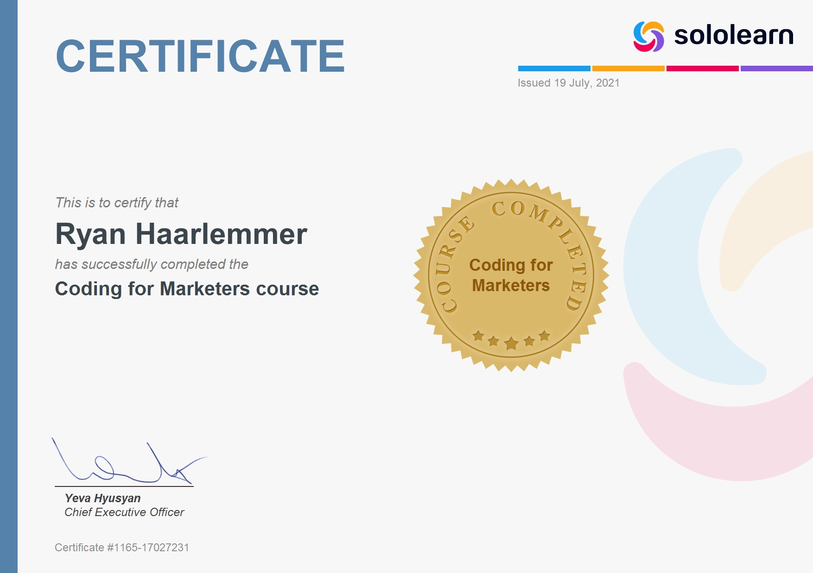

Dit gaat over mij als mens
It is shown by default, until the collapse plugin adds the appropriate classes that we use to style each element. These classes control the overall appearance, as well as the showing and hiding via CSS transitions. You can modify any of this with custom CSS or overriding our default variables. It's also worth noting that just about any HTML can go within the
It is shown by default, until the collapse plugin adds the appropriate classes that we use to style each element. These classes control the overall appearance, as well as the showing and hiding via CSS transitions. You can modify any of this with custom CSS or overriding our default variables. It's also worth noting that just about any HTML can go within the
.accordion-body, though the transition does limit
overflow.
Dit gaat over mijn coding skills
People ask me all the time — why do you like coding? Isn’t it really hard? Isn’t the work boring? Do you still have a social life?
Today, I am going to share 5 reasons why I have stuck with coding and why I love it!
1. You are always learning and challenging yourself! Whether you are learning a new programming language, trying out a new framework, or trying to solve a problem with a new algorithm, you are always stretching your mind. Now don’t get me wrong, the learning curve for coding is pretty steep. However by letting yourself make those mistake and experience those failures, that is when you grow the most. I’ve learned so much by overcoming the challenges that come with coding. Not only does coding make you a better problem solver but it also teaches you patience, perseverance, and discipline. Coding pushes you outside of your comfort zone in a good way!
2. Problem solving can be relaxing. I know what you are thinking. Like Jasmine, how can you say solving problems is relaxing?? When I get stuck on a problem, I want to tear my hair out! Don’t worry, I feel you. In fact, I’ve been there many times myself. However, my mindset completely shifted when I started approaching the problems and bugs I found while coding from a curious perspective. Instead of talking down on myself and saying things like why aren’t you smart enough, why can’t you figure this out, maybe this isn’t for you, I decided to ask myself better questions. I found myself going to StackOverFlow, Google, forums, TAs, and professors — and every single time, I would be able to solve that nasty bug or memory leak or whatever I thought was impossible! It’s kind of like being a detective — going to multiple sources, collecting information, and putting the pieces together. The feeling when you finally figure it out is so rewarding!
3. You get to work on exciting projects! What is cool about being a coder is that you have control over how an application or website or whatever you create works! One of the first software engineering projects I did was a bus app I made in one of my classes. I got to parse data from my city’s transit system to build an app that tracks when buses arrive at each station. Another cool project I created at a hackathon was an app to help match children looking for a adoption family to families looking to adopt. I also created a Spotify for smoothies app at another hackathon. I also created applications for large companies such as Nordstrom and Best Buy during my internships which leads me to my next point:
4. Code opens up opportunities for you. When I discovered coding when I was 13, I didn’t even know it was coding. I was using HTML tags inside a game forum to embed images, links, and videos I thought was cool. That lead me into learning web design and using HTML and CSS to create websites. When I entered my first year of college, I landed my first digital design internship at Best Buy Canada which was unusual for someone who just started their degree. What really helped me get the position was knowing how to code in HTML and CSS, something not all designers knew. Then, I caught the coding bug and went on to teach myself JavaScript, Ruby, Java, Python, etc. Combined with my computer science classes, I was able to pass multiple coding interviews to land a software engineering internship at Nordstrom. As a computer science student, I also got to travel to different cities to attend programs and conferences hosted by companies. None of this would have been possible if I did not know how to code and I am forever grateful for the endless opportunities coding has given me.
5. You get to be a part of a passionate community. Sure, most of the time, programming is an individual activity. However, I’ve found my computer science classes to be some of the most collaborative as well. When everyone is struggling and learning something new, people tend to collaborate more with one another to figure out problems together. In the coding community, nobody knows everything. There’s always a programming language, a new framework, a new API, or a new problem to solve and everyone needs help sometimes. Most people I’ve met in the coding community loves helping each other out. Whether that is your fellow classmates or professors or strangers on StackOverflow, people want to help you figure things out. Plus, most people in technology are very passionate about the things they have learned and are open to sharing. I have been able to meet so many talented, hardworking, and intelligent people through coding. The community definitely makes you feel less alone when you get another segmentation fault … cause guess what, we’ve all been there before
People ask me all the time — why do you like coding? Isn’t it really hard? Isn’t the work boring? Do you still have a social life?
Today, I am going to share 5 reasons why I have stuck with coding and why I love it!
1. You are always learning and challenging yourself! Whether you are learning a new programming language, trying out a new framework, or trying to solve a problem with a new algorithm, you are always stretching your mind. Now don’t get me wrong, the learning curve for coding is pretty steep. However by letting yourself make those mistake and experience those failures, that is when you grow the most. I’ve learned so much by overcoming the challenges that come with coding. Not only does coding make you a better problem solver but it also teaches you patience, perseverance, and discipline. Coding pushes you outside of your comfort zone in a good way!
2. Problem solving can be relaxing. I know what you are thinking. Like Jasmine, how can you say solving problems is relaxing?? When I get stuck on a problem, I want to tear my hair out! Don’t worry, I feel you. In fact, I’ve been there many times myself. However, my mindset completely shifted when I started approaching the problems and bugs I found while coding from a curious perspective. Instead of talking down on myself and saying things like why aren’t you smart enough, why can’t you figure this out, maybe this isn’t for you, I decided to ask myself better questions. I found myself going to StackOverFlow, Google, forums, TAs, and professors — and every single time, I would be able to solve that nasty bug or memory leak or whatever I thought was impossible! It’s kind of like being a detective — going to multiple sources, collecting information, and putting the pieces together. The feeling when you finally figure it out is so rewarding!
3. You get to work on exciting projects! What is cool about being a coder is that you have control over how an application or website or whatever you create works! One of the first software engineering projects I did was a bus app I made in one of my classes. I got to parse data from my city’s transit system to build an app that tracks when buses arrive at each station. Another cool project I created at a hackathon was an app to help match children looking for a adoption family to families looking to adopt. I also created a Spotify for smoothies app at another hackathon. I also created applications for large companies such as Nordstrom and Best Buy during my internships which leads me to my next point:
4. Code opens up opportunities for you. When I discovered coding when I was 13, I didn’t even know it was coding. I was using HTML tags inside a game forum to embed images, links, and videos I thought was cool. That lead me into learning web design and using HTML and CSS to create websites. When I entered my first year of college, I landed my first digital design internship at Best Buy Canada which was unusual for someone who just started their degree. What really helped me get the position was knowing how to code in HTML and CSS, something not all designers knew. Then, I caught the coding bug and went on to teach myself JavaScript, Ruby, Java, Python, etc. Combined with my computer science classes, I was able to pass multiple coding interviews to land a software engineering internship at Nordstrom. As a computer science student, I also got to travel to different cities to attend programs and conferences hosted by companies. None of this would have been possible if I did not know how to code and I am forever grateful for the endless opportunities coding has given me.
5. You get to be a part of a passionate community. Sure, most of the time, programming is an individual activity. However, I’ve found my computer science classes to be some of the most collaborative as well. When everyone is struggling and learning something new, people tend to collaborate more with one another to figure out problems together. In the coding community, nobody knows everything. There’s always a programming language, a new framework, a new API, or a new problem to solve and everyone needs help sometimes. Most people I’ve met in the coding community loves helping each other out. Whether that is your fellow classmates or professors or strangers on StackOverflow, people want to help you figure things out. Plus, most people in technology are very passionate about the things they have learned and are open to sharing. I have been able to meet so many talented, hardworking, and intelligent people through coding. The community definitely makes you feel less alone when you get another segmentation fault … cause guess what, we’ve all been there before
Dit gaat over mijn marketing skills
4 thing to love about marketing
1. Establish connections
Marketing can increase the skills of your people. Marketing is about reaching the public and connecting with consumers. There are several channels to do so, so you must be in tune with your audience to make the right marketing decisions. Eventually, as he perfects his intuition and backs it up with data, it will reach consumers effectively and drive them to take the desired actions.
Comparatively, when you work with your team to generate marketing ideas, you will be forming links within the company. Collaboration between you and your colleagues is an important part of a successful organization. Since marketing and sales teams foster prospects and close businesses, the growth of a business depends on the combination of both. There is even a term for the integration of marketing and sales: "marketing". While it can be difficult to unify these teams, it is beneficial for a brand to incorporate marketing into the mix. 2. Results specified in data
The numbers do not lie. If it is a social media campaign or paid advertising, you can use market research to collect valuable data. These data give an idea of how you should structure your strategy. For example, analytical data can determine which business segment focused on a particular period of time. If a team needs more support than others during a quarter, it can refocus its efforts to meet their needs. Analytical findings will explain the budget for marketing too. If it is clear that your business is reaching consumers with a particular investment, it would be worth continuing. If you enjoy numbers, you will love the unlimited amount of ways you can use the data in marketing.
3. Content Creation
Writing never goes out of style. Creating genuine and compelling content can work wonders for your business. Content that resonates with consumers can trigger certain emotions and form a link between a brand and an individual. This kind of relationship will lead to prospective customers. Therefore, it is worth practicing writing regularly to attract your audience, while improving your own writing skills along the way. Try writing a blog or weekly newspaper for ten minutes every day. If you work to improve your writing skills, you will soon realize that marketing becomes an easy process to love.
4. Design
Marketing can wake your inner artist. There are always new designs to create, tools to use and ideas to create. Creating visually appealing content is a great way to attract people who want to learn more. This is profound if you design an attractive marketing campaign that generates new customers. No matter how skilled you are in design, marketing explores your creative side. If you lack creativity, there are many tools available for non-designers looking to improve their marketing skills.
Even the most traditional tools can update your marketing game. For example, color may resonate with viewers. You can make a bold statement simply by incorporating certain colors into a digital ad or an email campaign. By implementing a particular color scheme throughout your marketing content, you can distinguish your brand from others in the industry and convey a purpose to your audience.
4 thing to love about marketing
1. Establish connections
Marketing can increase the skills of your people. Marketing is about reaching the public and connecting with consumers. There are several channels to do so, so you must be in tune with your audience to make the right marketing decisions. Eventually, as he perfects his intuition and backs it up with data, it will reach consumers effectively and drive them to take the desired actions.
Comparatively, when you work with your team to generate marketing ideas, you will be forming links within the company. Collaboration between you and your colleagues is an important part of a successful organization. Since marketing and sales teams foster prospects and close businesses, the growth of a business depends on the combination of both. There is even a term for the integration of marketing and sales: "marketing". While it can be difficult to unify these teams, it is beneficial for a brand to incorporate marketing into the mix. 2. Results specified in data
The numbers do not lie. If it is a social media campaign or paid advertising, you can use market research to collect valuable data. These data give an idea of how you should structure your strategy. For example, analytical data can determine which business segment focused on a particular period of time. If a team needs more support than others during a quarter, it can refocus its efforts to meet their needs. Analytical findings will explain the budget for marketing too. If it is clear that your business is reaching consumers with a particular investment, it would be worth continuing. If you enjoy numbers, you will love the unlimited amount of ways you can use the data in marketing.
3. Content Creation
Writing never goes out of style. Creating genuine and compelling content can work wonders for your business. Content that resonates with consumers can trigger certain emotions and form a link between a brand and an individual. This kind of relationship will lead to prospective customers. Therefore, it is worth practicing writing regularly to attract your audience, while improving your own writing skills along the way. Try writing a blog or weekly newspaper for ten minutes every day. If you work to improve your writing skills, you will soon realize that marketing becomes an easy process to love.
4. Design
Marketing can wake your inner artist. There are always new designs to create, tools to use and ideas to create. Creating visually appealing content is a great way to attract people who want to learn more. This is profound if you design an attractive marketing campaign that generates new customers. No matter how skilled you are in design, marketing explores your creative side. If you lack creativity, there are many tools available for non-designers looking to improve their marketing skills.
Even the most traditional tools can update your marketing game. For example, color may resonate with viewers. You can make a bold statement simply by incorporating certain colors into a digital ad or an email campaign. By implementing a particular color scheme throughout your marketing content, you can distinguish your brand from others in the industry and convey a purpose to your audience.
First slide label
Some representative placeholder content for the first slide.

Second slide label
Some representative placeholder content for the second slide.
Third slide label
Some representative placeholder content for the third slide.